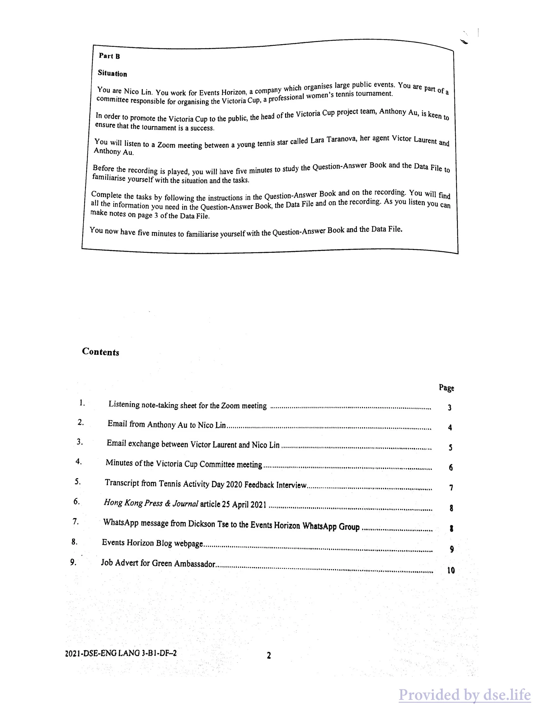
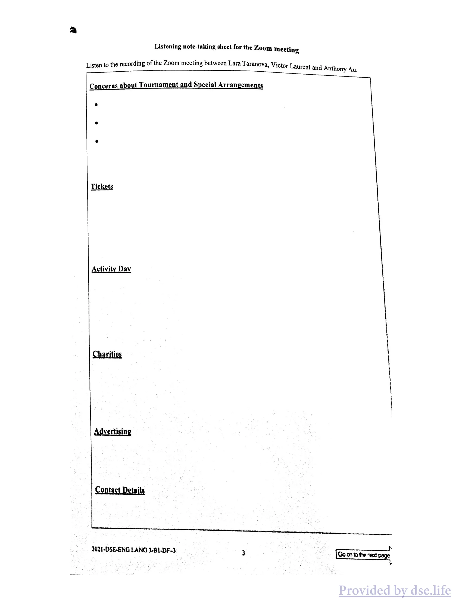
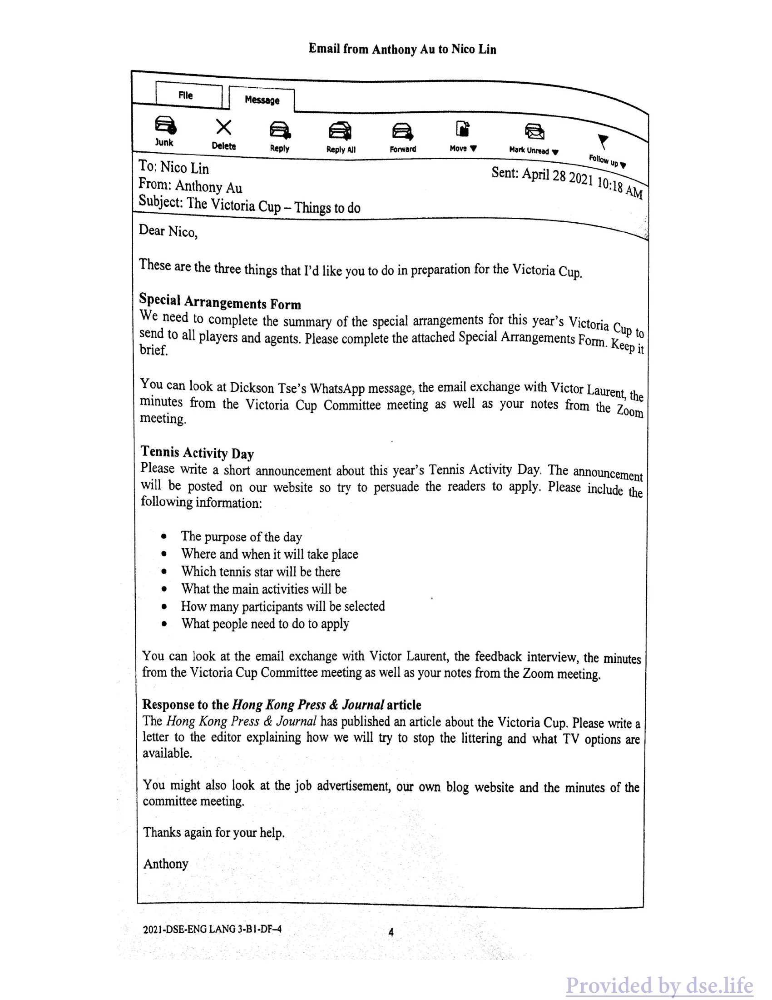
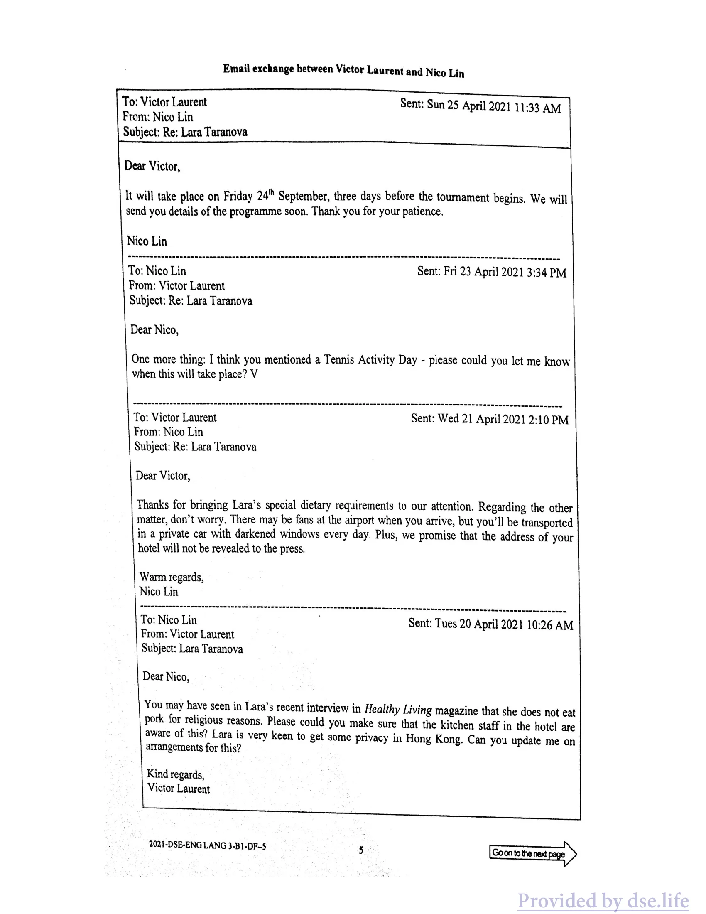
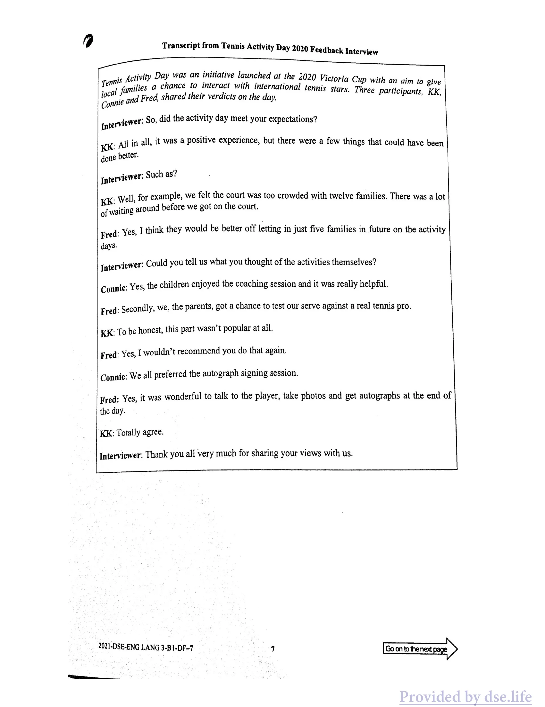
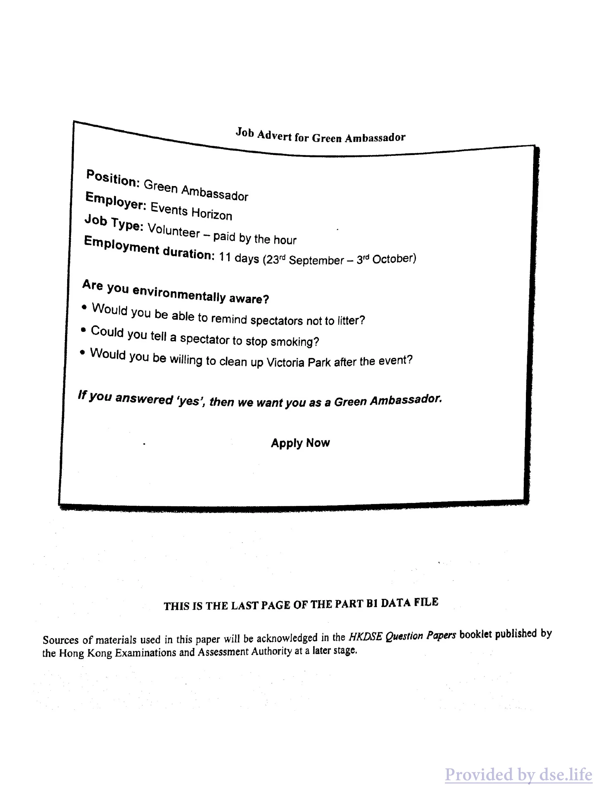
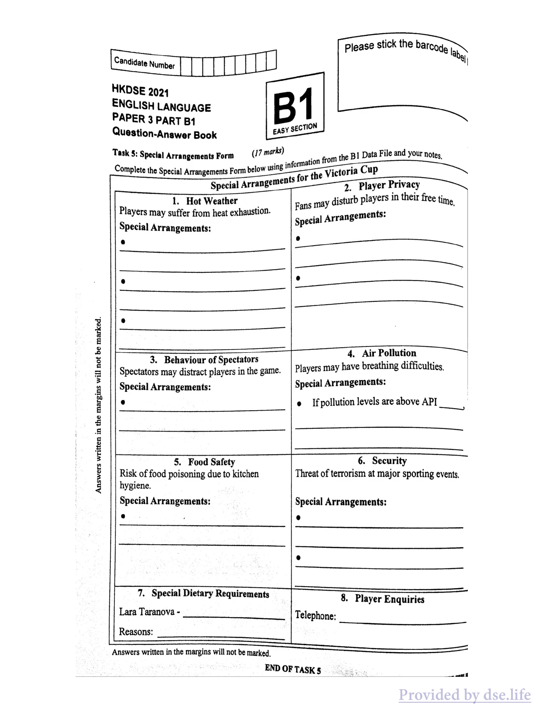

HONG KONG DIPLOMA OF SECONDARY EDUCATION EXAMINATION 2021
ENGLISH LANGUAGE PAPER 3
PART B1
DATA FILE
GENERAL INSTRUCTIONS (1) Refer to the General Instructions on Page 1 of the Question-Answer Book for Part A.
INSTRUCTIONS FOR PART B14 (1) The Question-Answer Book for Part B1 is inserted into this Data File. F ks 8 — 10). (2) For Part B, attempt EITHER those tasks in Part B1 (Tasks 5 ~ 7) OR those in Part B2 (Tas (3) You are advised to use a pen for Part B. inati i rs in the (4) The Data Files will NOT be collected at the end of the examination. Do NOT write your answei Data Files.
(5) Hand in only ONE Question-Answer Book for Part B, either B1 or B2, and tie it with the Question- Answer Book for Part A.
OFHFRRFKR RBH Not to be taken away before the Hong Kong Examinations and Assessment Authority end of the examination session All Rights Reserved 2021
Situation organises large public events. You are Part of g hich J You are Nico Lin. You work for Events Horizon, a compan he | women’s tennis tournament. committee responsible for organising the Victoria Cup, a profess! Anthony Au, is keen to ictoria Cup project team, In order to promote the Victoria Cup to the public, the head of the Vietor ensure that the tournament is a success. : ova, her agent Victor Laurent and . “ Lara Taran You will listen to a Zoom meeting between a young tennis star called Anthony Au. ion-Answer Book and the Data F; Before the recording is played, you will have five minutes to study the Question-A File to familiarise yourself with the situation and the tasks. -Answer Book and on the recording. You wil] find Complete the tasks by following the instructions in the W the Data File and on th Question e recording. As you listen you can all the information you need in the Question-Answer Bool make notes on page 3 of the Data File. ; : and the Data File. You now have five minutes to familiarise yourself with the Question-Answer Book
Contents
Page I. Listening note-taking sheet for the Zoom meeting 3 2. Email from Anthony Au to Nico Lit — 4 3. Email exchange between Victor Laurent and Nico Lin v — 5 4. Minutes of the Victoria Cup Committee meeting .v — 6 5. Transcript from Tennis Activity Day 2020 Feedback IntervieW — 7 6. Hong Kong Press & Journal article 25 April 2021 — 8 a WhatsApp message from Dickson Tse to the Events Horizon WhatsApp Group — 8 8. Events Horizon Blog webpage. 9
2021-DSE-ENG LANG 3-B1-DF-2 2

原卷版面 · 圖表、照片及留白依原頁保留
中文對照
B部分 情況組織大型公共活動。你是 g hich J 的一部分 你是 Nico Lin。您在 Events Horizon 工作，這是一家公司 |女子網球錦標賽。負責組織維多利亞盃的委員會，一言不發！ Anthony Au熱衷於維多利亞盃專案團隊，為了向大眾宣傳維多利亞盃，Vietor的負責人確保賽事成功。 ： ova、她的經紀人 Victor Laurent 和 . “ Lara Taran 您將聆聽一位名叫 Anthony Au 的年輕網球明星的 Zoom 會議。離子答案書和數據 F；在播放錄音之前，您將有五分鐘的時間研究問題 A 文件，以熟悉情況和任務。-答案書和錄音。您將發現按照 W 數據文件和問題 e 錄音文件中的所有答案文件中可以在您完成的答案時，您可以在所有問題上完成您的答案文件和記錄文件。 3 頁上做筆記： 和資料檔 現在您有五分鐘時間熟悉問答書。 內容 Page I. Zoom 會議聽力筆記表 3 2. Anthony Au 發給 Nico Lit 的電子郵件 — 4 3. Victor Laurent 與 Nico Lin v — 5 4. 維多利亞杯委員會會議紀要 .v — 6 5. 2020 年網球活動日反饋訪談記錄 W — 7 6. 2021 月 202 月 7 月的新報紙 2025 月 2025 月 2025 月 2025 月 2025 月的新報紙 2025 月 2025 月 2025 月 2025 月 2025 月的新報紙 2025 月 2025 月 2025 月 25 月的期刊訊息Tse 致 Events Horizon WhatsApp 群組 — 8 8. Events Horizon 部落格網頁。 9 2021-DSE-ENG LANG 3-B1-DF-2 2
Data File · 原卷第 10 頁
可選取的英文文字
Listening note-taking sheet for the Zoom meeting Listen to the recording of the Zoom meeting between Lara Taranova, Victor Laurent and Anthony A\ my Au.
Concerns about Tournament and Special Arrangements
Tickets
Activity Day
Charities
Advertising
2021-DSE-ENG LANG 3-BL-DF-3 3 entire

原卷版面 · 圖表、照片及留白依原頁保留
中文對照
Zoom 會議的聽力筆記表 聆聽 Lara Taranova、Victor Laurent 和 Anthony A\ my Au 之間的 Zoom 會議錄音。 對比賽和特別安排的擔憂 門票 活動日 慈善機構 廣告 2021-DSE-ENG LANG 3-BL-DF-3 3 整個
Data File · 原卷第 11 頁
可選取的英文文字
Email from Anthony Au to Nico Lin
B® <x aA Aa FF @ Delete Reply Reply All Forward Move 7 Mark Unread w ns To: Nico Lin Sent: April 28 292) | = From: Anthony Au O:1g
Subject: The Victoria Cup — Things to do Dear Nico, oN These are the three things that I'd like you to do in preparation for the Victoria Cup, Special Arrangements Form We need to complete the summary of the special arrangements for this year’s Victoria ¢ rd to all players and agents. Please complete the attached Special Arrangements Form. Kemps rief.
You can look at Dickson Tse’s WhatsApp message, the email exchange with Victor Laur ent, the minutes from the Victoria Cup Committee meeting as well as your notes from the Zoom meeting.
Tennis Activity Day a3, Please write a short announcement about this year’s Tennis Activity Day. The announcement will be posted on our website so try to persuade the readers to apply. Please include the following information:
The purpose of the day Where and when it will take place Which tennis star will be there What the main activities will be How many participants will be selected What people need to do to apply
You can look at the email exchange with Victor Laurent, the feedback interview, the minutes from the Victoria Cup Committee meeting as well as your notes from the Zoom meeting. Response to the Hong Kong Press & Journal article The Hong Kong Press & Journal has published an article about the Victoria Cup. Please write a letter to the editor explaining how we will try to stop the littering and what TV options are available.
You might also look at the job advertisement, our own blog website and the minutes of the committee meeting.
Thanks again for your help.
Anthony
2021-DSE-ENG LANG 3-B1-DF-4 4

原卷版面 · 圖表、照片及留白依原頁保留
中文對照
Anthony Au 給 Nico Lin 的電子郵件 B® <x aA Aa FF @ 刪除回覆 回覆全部 轉寄 7 標記為未讀 寄至：Nico Lin 寄送：4 月 28 292) | = 來自：Anthony Au O：1g 主題：維多利亞杯——要做的事情親愛的尼科，這是我希望你為維多利亞杯做準備的三件事，特別安排表我們需要向所有球員和經紀人完成今年維多利亞杯特別安排的總結。請填寫隨附的特別安排表。肯普斯里夫。 你可以查看謝迪生的WhatsApp訊息、與Victor Laur ent的電子郵件往來、維多利亞杯委員會會議的紀要以及你在Zoom會議上的筆記。 網球活動日 a3，請寫一篇關於今年網球活動日的簡短公告。該公告將發佈在我們的網站上，請盡力說服讀者申請。請包含以下資訊： 當天的目的 舉辦地點和時間 哪位網球明星將出席 主要活動是什麼 將選擇多少名參與者 申請時需要做什麼 您可以查看與 Victor Laurent 的電子郵件往來、反饋採訪、維多利亞杯委員會會議記錄以及 Zoom 會議的筆記。回應《香港報》文章 《香港報》發表了一篇有關維多利亞杯的文章。請寫信給編輯，解釋我們將如何努力阻止亂丟垃圾以及有哪些電視選項可供選擇。 您也可以查看招聘廣告、我們自己的部落格網站和委員會會議記錄。 再次感謝您的幫忙。 安東尼 2021-DSE-ENG LANG 3-B1-DF-4 4
Data File · 原卷第 12 頁
可選取的英文文字
Email exchange between Victor Laurent and Nico Lin
To: Victor Laurent Sent: Sun 25 April 2021 11:33 AM From: Nico Lin
Subject: Re: Lara Taranova
Dear Victor, It will take place on Friday 24" September, three days before the tournament begins. We will send you details of the programme soon. Thank you for your patience.
Nico Lin
To: Nico Lin Sent: Fri 23 April 2021 3:34 PM From: Victor Laurent
Subject: Re: Lara Taranova
Dear Nico,
One more thing: I think you mentioned a Tennis Activity Day - please could you let me know when this will take place? V
To: Victor Laurent Sent: Wed 21 April 2021 2:10 PM From: Nico Lin
Subject: Re: Lara Taranova
Dear Victor,
Thanks for bringing Lara’s special dietary requirements to our attention. Regarding the other matter, don’t worry. There may be fans at the airport when you arrive, but you’ll be transported in a private car with darkened windows every day. Plus, we promise that the address of your hotel will not be revealed to the press.
Warm regards, Nico Lin
To: Nico Lin Sent: Tues 20 April 2021 10:26 AM From: Victor Laurent
Subject: Lara Taranova
Dear Nico,
You may have seen in Lara’s recent interview in Healthy Living magazine that she does not eat pork for religious reasons. Please could you make sure that the kitchen staff in the hotel are aware of this? Lara is very keen to get some privacy in Hong Kong. Can you update me on arrangements for this?
Kind regards, Victor Laurent
2021-DSE-ENG LANG 3-B1-DF-5 5

原卷版面 · 圖表、照片及留白依原頁保留
中文對照
Victor Laurent 和 Nico Lin 之間的電子郵件交換 收件者：Victor Laurent 寄件者：2021 年 4 月 25 日星期日 11:33 寄件者：Nico Lin 主題：回覆：勞拉·塔拉諾娃 親愛的 Victor， 比賽將於 9 月 24 日星期五舉行，即比賽開始前三天。我們將很快向您發送節目的詳細資訊。感謝您的耐心等待。 林妮可 收件者：Nico Lin 寄件者：2021 年 4 月 23 日星期五下午 3:34 寄件者：Victor Laurent 主題：回覆：勞拉·塔拉諾娃 親愛的尼科， 還有一件事：我想您提到了網球活動日 - 請告訴我什麼時候舉行？ V 收件者：Victor Laurent 寄件者：2021 年 4 月 21 日星期三下午 2:10 寄件者：Nico Lin 主題：回覆：勞拉·塔拉諾娃 親愛的維克多， 感謝您讓我們注意到勞拉的特殊飲食要求。至於其他的事情，不用擔心。當你抵達機場時，可能會有粉絲，但每天你都會乘坐一輛窗戶昏暗的私家車。另外，我們保證您的飯店地址不會向媒體透露。 熱烈的問候，林尼科 收件者：Nico Lin 寄件者：2021 年 4 月 20 日星期二上午 10:26 寄件者：Victor Laurent 對象：拉拉·塔拉諾娃 親愛的尼科， 您可能在勞拉最近接受《健康生活》雜誌採訪時看到，她出於宗教原因不吃豬肉。請問飯店的廚房工作人員是否知道這一點？勞拉非常渴望在香港獲得一些隱私。能告訴我這方面的最新安排嗎？ 親切的問候， 維克多·洛朗 2021-DSE-ENG LANG 3-B1-DF-5 5
Data File · 原卷第 13 頁
可選取的英文文字
Minutes of the Victoria Cup Committee meeting
Date: Monday April 26, 2021
Venue: Meeting Room 4b, Events Horizon Present: Anthony Au (AA) Thomas Chan (TC) Lawrence Yip (LY) Sana Javed (SJ)
1. Confirmation of minutes
2. Kitchen environment , SJ confirmed that the kitchen surfaces will be disinfected every two hours.
5. Measures to deal with littering issues TC confirmed that thirty-five Green Ambassadors would be hired. Advert out this week, He expressed a hope that this would counter negative press from yesterday’s Hong Kong Press & Journal article. TC also added that we should highlight the duties that the Green Ambassadors will be doing to keep the area clean. AA informed the committee that further measures would be put in place. Details have been posted on the Events Horizon blog page.
Transcript from Tennis Activity Day 2020 Feedback Intervi erview
seni Activity Day was an initiative launched at the 2020 Victori ja Cup with an aim to give milies a chance to interact with international tennis staj rs. Three participants, KK, ws and Fred, shared their verdicts on the day. | fa .
I nterviewer: So, did the activity day meet your expectations? K: All in all, it was a positive experience, but there were a few things that could have been done better. Interviewer: Such as? . Well, for example, we felt the court was too crowded with twelve families. There was a lot of waiting around before we got on the court. Fred: Yes, | think they would be better off letting in just five families in future on the activity days. Interviewer: Could you tell us what you thought of the activities themselves? Connie: Yes, the children enjoyed the coaching session and it was really helpful. d: Secondly, we, the parents, got a chance to test our serve against a real tennis pro. Fre
KK: To be honest, this part wasn’t popular at all. Fred: Yes, I wouldn’t recommend you do that again. Connie: We all preferred the autograph signing session. Fred: Yes, it was wonderful to talk to the player, take photos and get autographs at the end of the day.
KK: Totally agree.
Interviewer: Thank you all very much for sharing your views with us.
2021-DSE-ENG LANG 3-B1-DF-7 1

原卷版面 · 圖表、照片及留白依原頁保留
中文對照
2020 網球活動日回饋訪談紀錄 Seni 活動日是 2020 年 Victori ja 盃期間發起的一項舉措，旨在為 milies 提供與國際網球明星互動的機會。 KK、ws 和 Fred 三位參與者分享了他們當天的看法。 |發。 訪談者：那麼，活動當天達到了您的預期嗎？ K：總而言之，這是一次積極的經歷，但有一些事情可以做得更好。訪談者：比如？ 。嗯，例如，我們覺得法庭上有十二個家庭太擁擠了。在我們上場之前，已經有很多人在等待了。弗雷德：是的，|我認為未來活動日只讓五個家庭進來會更好。訪談者：您能告訴我們您對活動本身的看法嗎？康妮：是的，孩子們很享受輔導課程，這真的很有幫助。 d：其次，我們，父母，有機會與真正的網球職業選手測試我們的發球。弗雷 KK：說實話，這部分根本不受歡迎。弗雷德：是的，我不建議你再這樣做。康妮：我們都喜歡簽名會。弗雷德：是的，在一天結束時與球員交談、拍照並獲得簽名真是太棒了。 KK：完全同意。 訪談者：非常感謝大家與我們分享您的觀點。 2021-DSE-ENG LANG 3-B1-DF-7 1
Data File · 原卷第 15 頁
可選取的英文文字
Victoria Cup rubbish ear, As crystal Lee, @ Cup tennis on local TV this ¥ id on a fan forum, ing line again, this lifelong tennis fan, ing to waste 1 + uvidents near Victoria. “There's no way T'™m val subscription Pa Want a repeat of last year. money paying the anil el for one week: urnamed Ho, complained, just to watch a oe IS fans dropped rubbish A spokesperson from cigane = sae was not available for comment.
storm surrounding Ma Cup earlier this week which “rupted due to the fact that tennis fans will Hot be able to watch the Victoria Cup at all 7
WhatsApp message from Dickson Tse to the Events Horizon WhatsApp Group
3.10 PM VV
We'll order two of these Outdoor Cooling Fans and set them up next to the players’ seats so that they can use them to cool down during the breaks
:G reen Ambassador > Events Horizon Employment lunteer — paid by the hour duration: 11 days (23 September — 3° October) Are . wy you environmentally aware? ¢ Would * Could YOu be able to remind spectators not to litter?
- yOu tell a spectator to stop smoking? e lou i Id you be willing to clean up Victoria Park after the event?
you answered ‘yes’, then we want you as a Green Ambassador.
Apply Now
THIS IS THE LAST PAGE OF THE PART BI DATA FILE
Sources of materials used in this paper will be acknowledged in the HKDSE Question Papers booklet published by the Hong Kong Examinations and Assessment Authority at a later stage.

原卷版面 · 圖表、照片及留白依原頁保留
中文對照
[$b Aver 擔任綠色大使 ：綠色大使 > 活動地平線 就業午餐會 — 按小時付費 時間：11 天（9 月 23 日 — 10 月 3 日） 是 。為什麼要有環保意識？是否 * 您能提醒觀眾不要亂丟垃圾嗎？ - 你告訴觀眾停止抽菸嗎？ e lou i 活動結束後你願意清理維多利亞公園嗎？ 如果您回答“是”，那麼我們希望您擔任綠色大使。 立即申請 這是 BI 部分資料檔的最後一頁 本文所用資料的來源將於香港考試及評鑑局稍後出版的香港中學文憑考試試卷小冊子中註明。
Question-Answer Book · 原卷第 28 頁
可選取的英文文字
HKDSE 2024
ENGLISH LANGUAGE
PAPER 3 PART B1 Question-Answer Book
Task 8: Special Arrangements Form — (/7 marks) Complete the Special Arrangements Form below using } Special Arrangemen turb players in their free tine, Fans may dis' Players may suffer from heat exhaustion. Special Arrangements: Special Arrangements: e
Players may have breathing difficulties, Spectators may distract players in the game. Special Arrangements: Special Arrangements: e Ifpollution levels are above API
Threat of terrorism at major sporting events, Risk of food poisoning due to kitchen hygiene. Special Arrangements: Special Arrangements: e e
e
Lara Taranova - Telephone: Reasons:
END OF TASK §

原卷版面 · 圖表、照片及留白依原頁保留
中文對照
2024年香港中學文憑考試 英語 論文 3 PART B1 問答書 任務 8：特別安排表 —（/7 分）使用 } 特別安排員在空閒時間擾亂球員，完成下面的特別安排表，球迷可能會認為球員可能會中暑。特別安排： 特別安排： e 球員可能會出現呼吸困難，觀眾可能會分散比賽中球員的注意力。特殊安排： 特殊安排： e 若污染程度高於 API 重大體育賽事中的恐怖主義威脅、廚房衛生造成的食物中毒風險。特別安排： 特別安排： e e e Lara Taranova - 電話： 原因： 任務結束§
Question-Answer Book · 原卷第 29 頁
可選取的英文文字
Task 6: Announcement for Tennis Activity Day (18 marks) Write a short announcement for th B1 Data File and your notes. Write ‘ictal een for the Events Horizon website using information from the
Task 7: Letter to the editor of the Hong Kong Press & Journal (18 marks) Write a letter to the editor of the Hong Kong Press & Journal using information from the B1 Data File. Write around